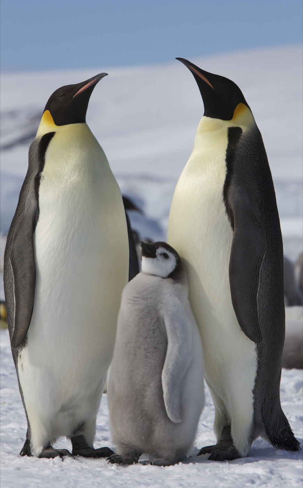

Lion
The lion is a mammal from the feline family and one of the four large cats belonging to the tiger genus. It is considered the second largest feline in the world after the tiger, as the mass of its large males exceeds 250 kilograms.
Lion species
Northern subspecies lions include the following subspecies of lions: The Senegal lion (in English: Senegal lion), and (scientific name: Panthera leo senegalensis), lives in West Africa. These lions are considered highly threatened with extinction, and their range of existence extends from Central African Republic to Senegal, and it is considered the smallest species of lion found in sub-Saharan Africa.
The Indian or Asian lion: (in English: Indian or Asiatic lion), (scientific name: Panthera leo persica), is one of the species that is greatly threatened with extinction, as this breed was spreading from Turkey across southwest Asia to the Indian subcontinent, but now There are only 523 Asiatic lions in the Gir National Park in the Indian state of Gujarat.
Lions Reproduction
Mating take place at most times of the year and a male may mate with several females. A lioness has cubs about every two years and gestation is 105 - 112 days. Shortly before birth, she chooses a suitable place for her lair, which ideally should be out of sight from predators, sheltered and close to water.

Penguin
Penguins are a group of aquatic flightless birds from the order Sphenisciformes of the family Spheniscidae. They live almost exclusively in the Southern Hemisphere: only one species, the Galápagos penguin, is found north of the Equator.
Highly adapted for life in the ocean water, penguins have countershaded dark and white plumage and flippers for swimming. Most penguins feed on krill, fish, squid and other forms of sea life which they catch with their bills and swallow whole while swimming. A penguin has a spiny tongue and powerful jaws to grip slippery prey.
They spend about half of their lives on land and the other half in the sea. The largest living species is the emperor penguin (Aptenodytes forsteri): on average, adults are about 1.1 m (3 ft 7 in) tall and weigh 35 kg (77 lb). The smallest penguin species is the little blue penguin
(Eudyptula minor), also known as the fairy penguin, which stands around 30–33 cm (12–13 in) tall and weighs 1.2–1.3 kg (2.6–2.9 lb).[7] Today, larger penguins generally inhabit colder regions, and smaller penguins inhabit regions with temperate or tropical climates. Some prehistoric penguin species were enormous: as tall or
heavy as an adult human. There was a great diversity of species in subantarctic regions, and at least one giant species in a region around 2,000 km south of the equator 35 mya, during the Late Eocene, a climate decidedly warmer than today.
Penguins Reproduction
Emperor penguins begin courtship in March or April and are serially monogamous, typically taking one mate per year. The female lays one egg in May or June, transfers the egg to the male, and returns to sea to feed while the male incubates the egg in his brood pouch for about 65 days.

Neon Tetra
The neon tetra (Paracheirodon innesi) is a Freshwater fish of the characin family (family Characidae) of order Characiformes. The type species of its genus, it is native to blackwater and clearwater streams in the Amazon basin of South America. Its bright colouring makes the fish visible to conspecifics in the dark blackwater streams, and is also the main reason for its popularity among freshwater fish hobbyists, with neon tetras being one of the most widely kept tropical fish in the world.
Breeding Neon tetra The male is slender, and the blue line is straighter. The female is rounder, producing a bent blue line. Some aquarists say the females look plumper when viewed from above. However, the straightness of the line and the plumpness of the female might occasionally be due to the eggs she is carrying. A neon tetra can appear slightly plump in the belly due to having overeaten. Neon tetras need dim lighting, a DH less than one, about 5.5 pH, and a temperature of 75 °F (24 °C) to breed. There also needs to be a lot of tannins in the water. Neon tetras are old enough to breed at 12 weeks. Breeding neon tetras is considered to be difficult in home aquariums. However, it is becoming more common, with less than 5% of specimens currently sold in America caught in the wild, and more than 1.5 million specimens imported to America each month from fish farms.

| Name | Platoon | Reproduction method | Environment climate |
|---|---|---|---|
| Lion | Felidae | Mating like mammals | Plains and lands covered with grass |
| kangaroo | Mammals | Mating like mammals | Forests are a rainy environment |
| elephant | Elephants | Mating like mammals | Different environments such as plains, grasslands and next to lakes |
| horse | Equine | Multiple mating | Tropical areas, forests, fields and plains |
| Cat | Felidae | Mating | Forests, grasslands, tundra, coastal areas, farmlands, bushlands, urban areas and wetlands |